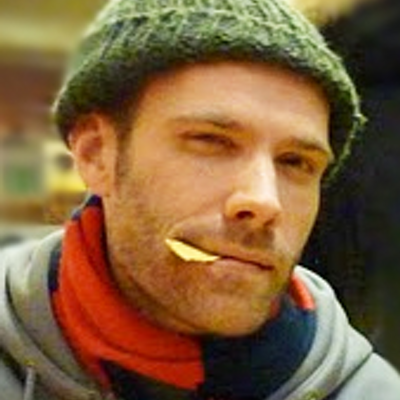

Year One
Making Some (Not Entirely Horrible) Noise
by Chris Baty
The very first NaNoWriMo took place in July 1999, in the San Francisco Bay Area. That first year there were 21 of us, and our July noveling binge had little to do with any ambitions we might have harbored on the literary front. Nor did it reflect any hopes we had about tapping more fully into our creative selves. No, we wanted to write novels for the same dumb reasons twenty-somethings start bands. Because we wanted to make noise. Because we didn't have anything better to do. And because we thought that, as novelists, we would have an easier time getting dates than we did as non-novelists.
So sad. But so, so true.
The first year's trials and tribulations are laid out in the introduction to No Plot? No Problem! But the short version is that our novels, despite our questionable motives and pitiful experience, came out okay. Not great. But not horrible, either. And, more surprising than that, the writing process had been really, really fun.
Fun was something we hadn't expected. Pain? Sure. Embarrassment? Yes. Crippling self-doubt followed by a quiet distancing of ourselves from the entire project? You bet.
But fun? Fun was a revelation. Novel writing, we had discovered, was just like watching TV. You get a bunch of friends together, load up on caffeine and junk food, and stare at a glowing screen for a couple hours. And a story spins itself out in front of you.
I think the scene – full of smack-talk and muffin crumbs on our keyboards – would have rightly horrified professional writers. We had taken the cloistered, agonized novel-writing process and transformed it into something that was half literary marathon and half block party.
We called it noveling. And after the noveling ended on August 1, my sense of what was possible for myself, and those around me, was forever changed. If my friends and I could write passable novels in a month, I knew, anyone could do it.
Which is how the whole thing really got rolling.
Chris Baty accidentally founded National Novel Writing Month in 1999, and now serves as a Board Member Emeritus. He spends his days teaching classes at Stanford University's Writer's Studio, giving talks about writing and creativity, helping companies with content strategy, and endlessly revising his own novels. He's the author of No Plot? No Problem! and the co-author of Ready, Set, Novel.